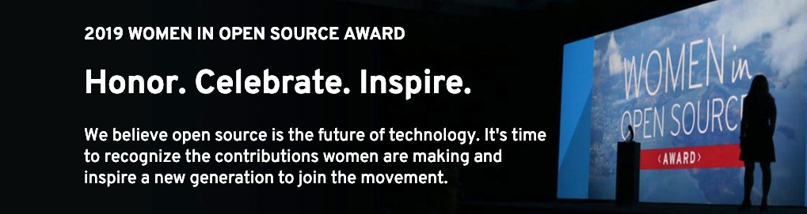

Gabriela's Women in Open Source Award Nomination
Women in Open Source Award Nomination
open-source
community
2019
We have amazing news! Gabriela de Queiroz is among the five finalists of the Red Hat’s Women in Open Source Award (community track).

Please help Gabriela (and all the R-Ladies) win the award by voting until February 25th, 2019 here.
In this post, we tell you why we (all the authors listed below, except Gabriela, of course) nominated her for this competitive award and why it would be great for all R-Ladies that Gabriela wins this award.
Why did we nominate Gabriela?
We nominated Gabriela because she founded the first chapter of R-Ladies in San Francisco in 2012. For four years, she organized R-Ladies San Francisco by herself and went to events and conferences to talk about R-Ladies. During those years she steadily seeded the way and actively worked towards the foundation of R-Ladies Global in June 2016 - together with Erin Ledell, Hannah Frick, Claudia Vitolo, Alice Daish, Chiin-Rui Tan, and Rachel Kirkham and the support of Heather Turner, Hadley Wickham, and the R Consortium.
Gabriela’s initial idea and sustained effort for the last seven years helped made R-Ladies the great community it is now. The following plot (by Erin Ledell) clearly shows Gabriela’s impact in terms of the number of R-Ladies chapters founded since 2012.

R-Ladies groups over time
As of today, R-Ladies is a worldwide organization that promotes gender diversity in the R community with 40k+ participants in 140+ cities of 45+ countries. Each chapter hosts regular meetups promoting professional and social exchanges. (If you are reading this some time after its publication, go to this shiny app to get current R-Ladies figures).
R-Ladies groups worldwide
Gabriela empowered thousands of people, especially women and minorities, working with R to connect and thrive. Her contribution to the community is difficult to quantify objectively, but it is huge and keeps growing fast worldwide.
What did motivate Gabriela to create the first R-Ladies chapter?
Gabriela is originally from Brazil. When she moved to the Bay Area (USA), she was impressed by the number of free resources and how much knowledge and opportunities were available. She started going to meetups almost daily to learn as much as she could. At some point, she felt the need to give back to the community and started thinking of ways to realize her desire to help others.
She wanted to create a space where she could feel welcome, safe, and judgment-free, a place where she could see herself in the audience. She knew R. She saw this as an opportunity to teach and empower others through this open source programming language. That is how she came up with the idea of founding R-Ladies San Francisco.
R-Ladies allowed her to further her learning while permitting her to give back by sharing what she knows. She loves and is continuously inspired by the virtuous circle that open source generates, which enables her to keep empowering others. Watch this video to listen to Gabriela talking about her motivation!
Gabriela’s plans for R-Ladies in 2019
Gabriela plans to keep expanding R-Ladies, especially in locations where it can be challenging to create and sustain this kind of community (e.g., Latin America, Africa, and Asia). She will also keep looking for ways to fund the community and reach out to other underrepresented communities.
She is committed to help and mentor more people. She believes that everyone has almost limitless potential and that the right mentor can be instrumental in developing such qualities. For Gabriela, a good mentor can completely change the mentee’s life in very positive ways. She is an accessible, present, and kind leader and a mentor herself. Through the creation of R-Ladies, she has been very successful in helping women and other minorities flourish and grow in the open source worldwide community.
If Gabriela wins this award, R-Ladies and the Open Source community at large also win
Last year, R-Ladies became an R Consortium top-level project due to “its big commitment within the R community.” Gabriela is one of R-Ladies’ most prominent community advocate and ambassador. Consequently, Gabriela was the first Latinx to be elected as an R Foundation ordinary member “in recognition of her services to the R community.” She was even featured in the Significance article on 25 years of R. There’s no doubt Gabriela and the R-Ladies are a relevant part of the Open Source ecosystem. R-Ladies being seen and having a voice in the community helps enormously making the whole R user community R’s best feature.
We are very excited with Gabriela’s achievement of being one of the finalists for the Red Hat Women in Open Source Award because this extends the visibility of R-Ladies well beyond the R ecosystem into the larger Open Source world, where R-Ladies mission could have yet a wider impact. Having Gabriela as the winner of this Open Source community award will take the visibility of R-Ladies to the next level. It will give the possibility of expanding the R-Ladies way all over making the Open Source community a better place for gender minorities in tech, new programmers, and everyone in general.

Contributed authors: Laura Acion (Argentina), Gabriela de Queiroz (USA), Liili Abuladze (Georgia), Yanina Bellini (Argentina), Jenny Bryan (Canada), Mine Cetinkaya-Rundel (USA), Fanny Chow (USA), Alyssa Columbus (USA), Patricia Cucio Guisordi (Brazil), Maria Florencia D’Andrea (Argentina), Natalia da Silva (Uruguay), Mine Dogucu (USA), Beatriz Hernández (Spain), Caitlin Hudon (USA), Soumya Kalra (USA), Jesse Mostipak (USA), Athanasia M. Mowinckel (Norway), Brett Ory (USA), Riva Quiroga (Chile), Emily Robinson (USA), Paloma Rojas (Bolivia), Sina Rüeger (Switzerland), Maëlle Salmon (France), Jennifer Thompson (USA), Heather Turner (UK), Brooke Watson (USA), Amy Yang (USA).